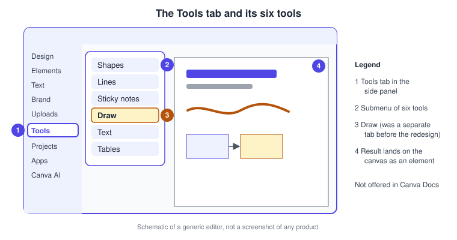
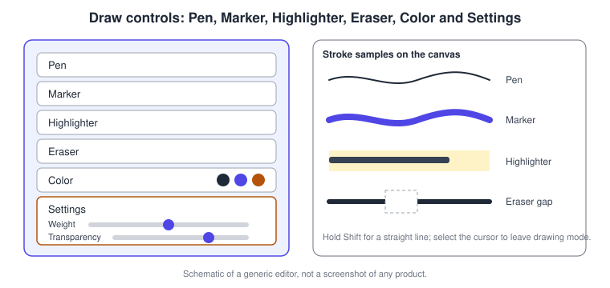
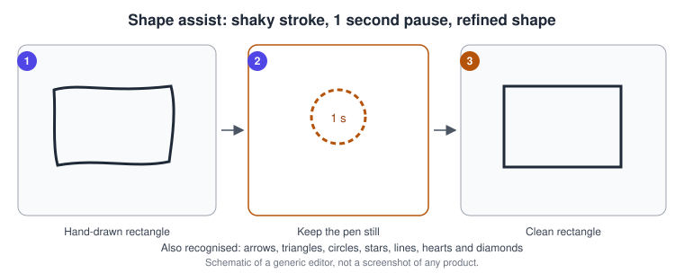
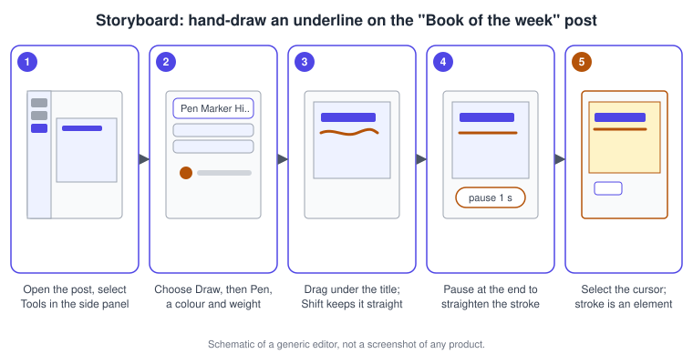

Drawing and the Tools Tab
|
This content was generated with the assistance of AI and should be verified against the official documentation before being relied on in production. |
This page was checked against the official Canva Help Center on 2026-11-07. It covers the Tools tab of the Canva editor and the tool that most people look for first when they want to sketch: Draw. The Tools tab is available in every design type except Canva Docs. The Draw article states that Draw is available in all design types except Docs and does not restrict it to a plan, and the Shapes article lists Free, Pro, Teams, Enterprise, Education and Nonprofits accounts; the Tools tab itself is therefore not a paid feature. Prices are not repeated here; see https://www.canva.com/pricing/. Nothing on this page uses Canva AI, so no AI tier applies, and every feature described is generally available.
The running example is Bookshelf, the book catalogue and reading-list app designed in the Figma sub-section. The "Book of the week" post of the launch campaign gets a hand-drawn underline, a quick diagram of the review flow and a few sticky notes for the team. For the editor itself see Editor Tour, and for the shape and line libraries in the Elements tab see Elements, Shapes, Lines and Graphics.
What the Tools tab is and why it exists
Before the "glow up" redesign of the editor, drawing lived in its own Draw tab (and, earlier, in a beta Draw app that the current Draw replaces), while shapes, lines, sticky notes, text and tables were scattered across the Elements tab and menus. The Help Center now describes the Tools tab as one place with instant access to Shapes, Lines, Sticky notes, Draw, Text and Tables, so you do not search through menus. It also states that the consolidation keeps all existing functionality, and that shapes can still be resized after they are added. A planned update will remember recently used tools; the article describes it as upcoming, so do not rely on it yet.

Open the Tools tab
-
Open a new or existing design that is not a Canva Docs document.
-
Select Tools in the side panel on the left.
-
Choose Shapes, Lines, Sticky notes, Draw, Text or Tables.
-
In the submenu that appears, select an element to add it to the design.
If the tab is not visible, check that you are not in Canva Docs, where it is unavailable, then refresh the page or restart the app. In a Whiteboard the Tools tab opens automatically when the board already has content; a blank board opens the Design tab instead, and you can switch to Tools at any time. The editor tour explains how to restore side panel tabs that were hidden.
The six tools at a glance
| Tool | What it does | Guide |
|---|---|---|
Shapes |
Basic shapes, polygons, arrows, flowchart shapes, speech bubbles and banners; add text, colour, borders and corner rounding |
|
Lines |
Straight and connector lines; a connector snaps to a shape edge and stays attached when the shape moves |
Same page; the shortcut to add a line is |
Sticky notes |
Coloured notes for brainstorming; sort, react with emojis and copy to a spreadsheet |
This page |
Draw |
Freehand Pen, Marker, Highlighter and Eraser strokes |
This page |
Text |
Text boxes and styles |
|
Tables |
Tables with rows, columns and merged cells; type |
Draw
Draw lets you sketch directly on a design for a personal touch, leave notes for your team, or sketch diagrams and flowcharts. The Help Center says Draw is available in all design types except Docs. Strokes you draw are ordinary design elements afterwards: once you leave drawing mode you select, move and resize them like any other element.
Tools and controls
After you select Draw, the panel offers Pen, Marker, Highlighter, Eraser and Color, plus Settings. A Select icon (the cursor) leaves drawing mode.
| Control | Behaviour |
|---|---|
Pen, Marker, Highlighter |
Brushes; select one, then select and drag on the design to draw |
Eraser |
Select it, then brush over the areas you want to erase; select the cursor to apply the changes and leave eraser mode |
Color |
Choose from your document colours, or pick a new colour with the rainbow tile |
Settings |
Choose a weight preset or enter your own, and drag the sliders for weight and transparency |
Select icon |
Leaves drawing mode so you can select the strokes you drew |
Close icon |
Hides the Draw panel |
Hold Shift while dragging to draw a straight line. If you collaborate on a shared design, you can see whether other people are using the draw tool by looking at their cursors.

Shape assist
Hand-drawn lines are allowed to look shaky, but if you want a polished result the Help Center describes shape assist: draw a shape and pause at the end of the stroke for one second, and Canva refines it. The article lists the shapes it currently recognises: rectangles, arrows, triangles, circles, stars, lines, hearts and diamonds, and says more are being added. Combined with the Shift straight line, this is the fastest way to sketch a labelled box-and-arrow diagram without opening the Shapes library. For long-lived diagrams with attached connectors, use real shapes and connector lines instead, because drawn strokes do not attach to shapes.

Brush gestures on desktop
Several photo brush tools share the same navigation gestures, which matter when you need to paint accurately: Background Remover, Magic Eraser, Magic Edit, Blur effect, Magic Grab and Pixel Eraser. The Help Center lists the gestures as follows; the article gives no Mac-specific variants beyond the trackpad.
| Action | Mouse | Trackpad |
|---|---|---|
Zoom |
Press Ctrl and use the mouse wheel |
Pinch |
Pan |
Press the middle (or right) mouse button and drag, depending on the device |
Two-finger drag |
Draw |
Left-click and drag |
One-finger press and drag |
These gestures belong to the photo brushes, not to the Draw tool, whose strokes are placed on the page. The tools themselves are explained on AI Photo Tools and Photos and Image Editing.
Sticky notes
Sticky notes are meant for brainstorming on a whiteboard, so your team can write ideas or comments and arrange them freely.
-
Add: open Elements in the side panel (the Tools tab lists the same tool), choose a coloured note under Sticky note, then double-click it to type. Press
Sto add one quickly. Select the more icon and choose Add your name to sign a note. -
Copy to a spreadsheet: select a note (hold Shift and click to select several), choose the more icon on the floating toolbar, then Copy, and paste into a spreadsheet or text editor. Cmd + C and Cmd + V on macOS, Ctrl + C and Ctrl + V on Windows, also work.
-
Sort: drag vertically or horizontally to select a group, choose Sort on the floating toolbar, then sort By color, By name, By topic or By Reactions.
-
React: select a note, choose Add reaction and pick an emoji; reactions appear as floating badges.
Shapes, lines and tables from the Tools tab
The Tools tab is a shortcut to these libraries, so their rules apply. Shapes can be recoloured with a solid colour or a gradient, resized with the corner handles (proportional) or side pill handles (asymmetric), rotated, given text by double-clicking, and given more sides, points or rounded corners for polygons and stars. They cannot be flipped, cannot hold images (use frames instead), and uploaded SVG shapes can only be resized or recoloured. Connector lines snap to a shape edge and stay attached, and a double-click adds a label such as Yes or No. Tables are added from the Elements tab or with /table, and data can be pasted from a spreadsheet on desktop at canva.com, while importing data into a table was not available when the article was checked.
Desktop and mobile
The Help Center articles above are written for both desktop and mobile, and each has a separate Mobile tab. This page follows the desktop steps. The Tools tab and Draw panel are located in the side panel of the full editor; on a phone the layout is different, so check the Mobile tab of each article. Gestures for brush tools describe a mouse and a trackpad, so they apply to desktop editing.
Procedures on the Bookshelf campaign
Hand-draw an underline on the "Book of the week" post
-
Open the Book of the week Instagram post.
-
Select Tools in the side panel, then Draw.
-
Choose Pen and pick a colour from your document colours.
-
Select Settings and set the weight you want.
-
Drag under the title; hold Shift for a straight line, or pause for one second at the end so shape assist refines it.
-
Select the cursor icon to leave drawing mode, then move or resize the underline like any element.

Sketch the review flow and leave notes for the team
-
Open a whiteboard named Bookshelf review flow (or any design except Docs).
-
Draw boxes and arrows with the Pen and let shape assist clean them, or use Tools, Shapes and Tools, Lines for a diagram that must stay connected.
-
Press
Sto add sticky notes with questions, and sign them with Add your name. -
Select the notes and use Sort, By topic, to group the answers.
-
Use the Eraser to remove a stray stroke, then select the cursor to apply it.
Common pitfalls
-
The Tools tab does not exist in Canva Docs, and Draw is not available there either.
-
Drawings are not saved beyond 1 MB of strokes per design; split long sketches across copies.
-
Leave drawing mode with the cursor before trying to select a stroke, otherwise a drag draws a new one.
-
Shape assist needs a pause of one second at the end of the stroke; releasing early keeps the raw stroke.
-
Drawn strokes are not connectors; boxes drawn by hand will not carry their arrows when moved.
-
Brush gestures apply to photo brushes, not to Draw.
Where older guides are outdated
| Older statement | Current behaviour | Date |
|---|---|---|
Draw is a separate tab in the side panel |
Draw lives in the Tools tab with Shapes, Lines, Sticky notes, Text and Tables |
Glow-up redesign |
Draw is a beta app |
The current Draw replaces the beta Draw app |
Glow-up redesign |